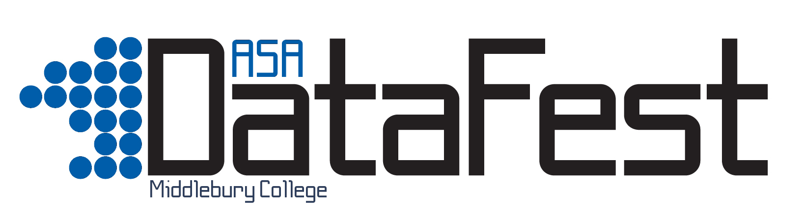
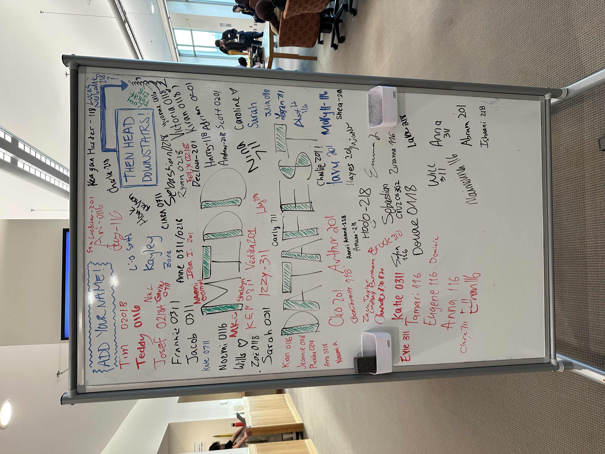
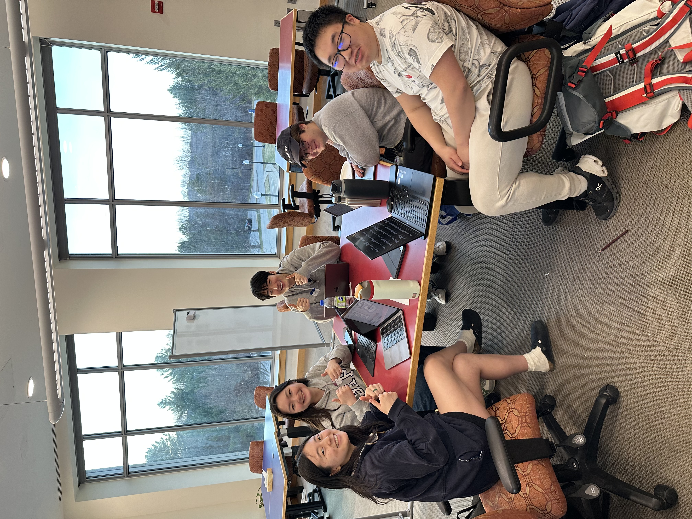
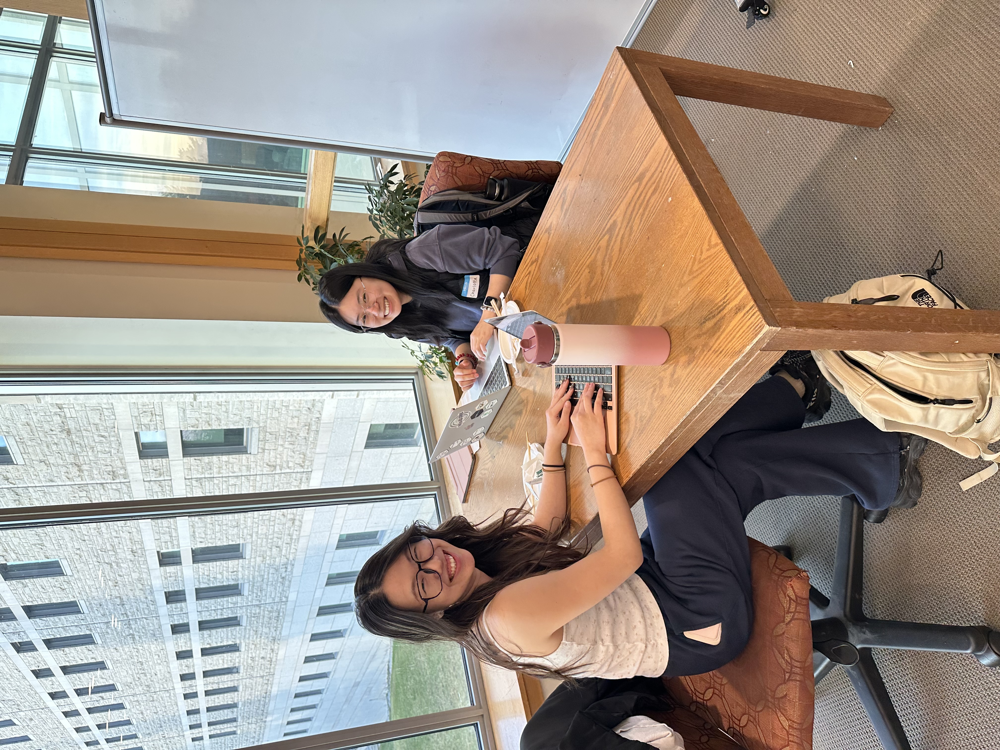
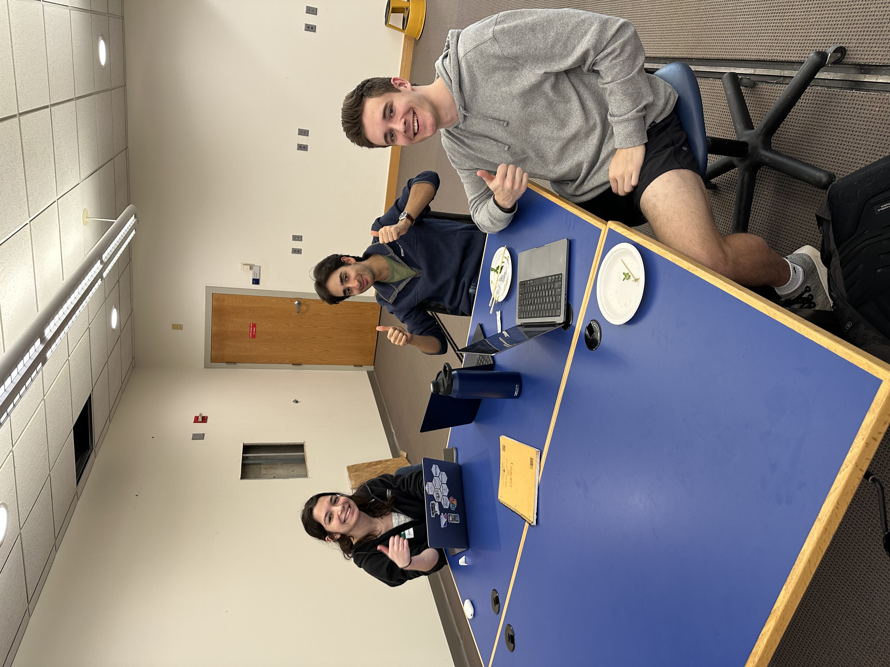
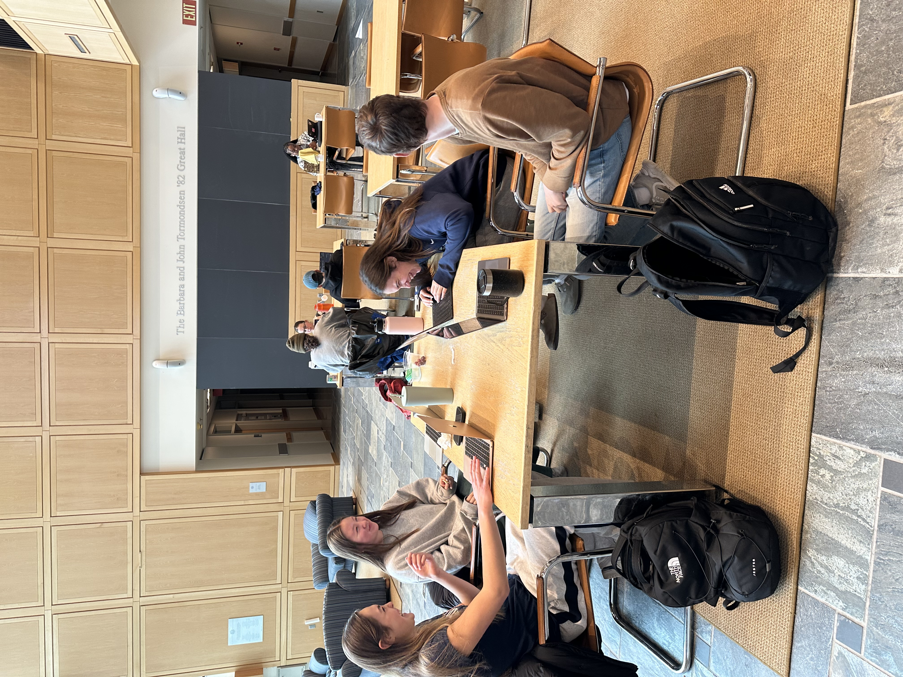

What is DataFest?
The American Statistical Association (ASA) DataFest is a celebration of data in which teams of students work around the clock to find and share meaning in a large, rich, and complex data set. The event is open to students of all backgrounds, and provides an opportunity to gain hands-on experience with real-world data. Photos from previous events are provided below.









No photos available yet for 2026.
How does it work?
A large, complex data set will be introduced at the event start, alongside a broad research question. Students will then have until Sunday to create a five-minute presentation that addresses some interesting aspect of the data. The data are kept confidential until the start of the event, but some examples of past events are provided below. To see a full list of past data, visit the ASA DataFest webpage.
Event Details
- Date: April 18 - April 19
- Opening ceremony: Saturday, April 18 10:00 am
- Presentations: Sunday, April 19 12:00 pm
- Closing ceremony: Sunday, April 19 1:30 pm
- Location: The Q-Center (MBH 202)
- Prizes: Prizes will be awarded for a variety of reasons, both technical and creative.
For more details, please contact the Statistics faculty members (stats@middlebury.edu).